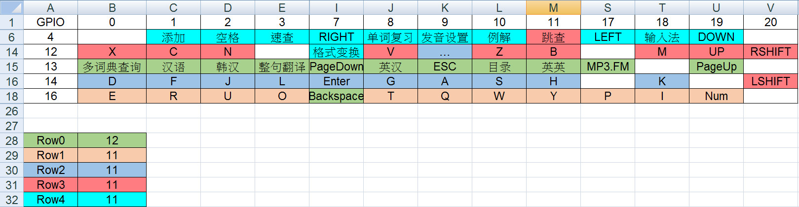

Steward
分享是一種喜悅、更是一種幸福
微電腦 - iRiver Dicple D88 - 鍵盤和GPIO對應表
鍵盤和GPIO的對應如下：
| ESC | GPIO-13, GPIO-09 |
|---|---|
| 目錄 | GPIO-13, GPIO-10 |
| 多詞典查詢 | GPIO-13, GPIO-00 |
| 漢語 | GPIO-13, GPIO-01 |
| 英漢 | GPIO-13, GPIO-08 |
| 英英 | GPIO-13, GPIO-11 |
| 韓漢 | GPIO-13, GPIO-02 |
| 整句翻譯 | GPIO-13, GPIO-03 |
| MP3.FM | GPIO-13, GPIO-17 |
| Pg Up | GPIO-13, GPIO-19 |
| Pg Dn | GPIO-13, GPIO-07 |
| BACKSPACE | GPIO-16, GPIO-07 |
| Q | GPIO-16, GPIO-09 |
| W | GPIO-16, GPIO-10 |
| E | GPIO-16, GPIO-00 |
| R | GPIO-16, GPIO-01 |
| T | GPIO-16, GPIO-08 |
| Y | GPIO-16, GPIO-11 |
| U | GPIO-16, GPIO-02 |
| I | GPIO-16, GPIO-18 |
| O | GPIO-16, GPIO-03 |
| P | GPIO-16, GPIO-17 |
| NUM | GPIO-16, GPIO-19 |
| ... | GPIO-12, GPIO-09 |
| A | GPIO-14, GPIO-09 |
| S | GPIO-14, GPIO-10 |
| D | GPIO-14, GPIO-00 |
| F | GPIO-14, GPIO-01 |
| G | GPIO-14, GPIO-08 |
| H | GPIO-14, GPIO-11 |
| J | GPIO-14, GPIO-02 |
| K | GPIO-14, GPIO-18 |
| L | GPIO-14, GPIO-03 |
| Enter | GPIO-14, GPIO-07 |
| LSHIFT | GPIO-14, GPIO-20 |
| Z | GPIO-12, GPIO-10 |
| X | GPIO-12, GPIO-00 |
| C | GPIO-12, GPIO-01 |
| V | GPIO-12, GPIO-08 |
| B | GPIO-12, GPIO-11 |
| N | GPIO-12, GPIO-02 |
| M | GPIO-12, GPIO-18 |
| 跳查 | GPIO-11, GPIO-04 |
| UP | GPIO-12, GPIO-19 |
| RSHIFT | GPIO-12, GPIO-20 |
| 發音設置 | GPIO-09, GPIO-04 |
| 例/解 | GPIO-10, GPIO-04 |
| 添加 | GPIO-04, GPIO-01 |
| 單詞複習 | GPIO-08, GPIO-04 |
| 格式變換 | GPIO-12, GPIO-07 |
| 空格 | GPIO-04, GPIO-02 |
| 輸入法 | GPIO-04, GPIO-18 |
| 速查 | GPIO-04, GPIO-03 |
| LEFT | GPIO-04, GPIO-17 |
| DOWN | GPIO-04, GPIO-19 |
| RIGHT | GPIO-04, GPIO-07 |
感謝鉗工幫忙整理的表格
